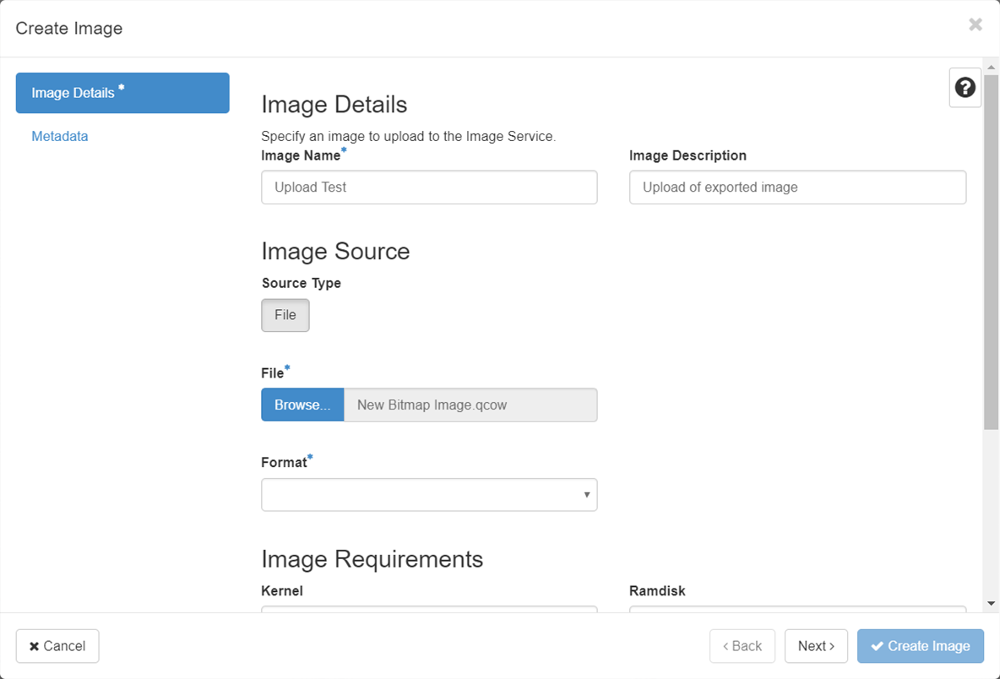

How to convert virtual machines to run in OpenStack
Overview
This article outlines the process for importing virtual machine (VM) images from other cloud or virtualisation platforms and run them on OpenStack's KVM hypervisor using the Linux virt-v2v tool.
Intended audience
This article is intended for operators who have the capability to download a VM image from their current hypervisor and upload images to UKCloud's OpenStack service. In addition, this article assumes that operators are familiar with Linux and its command line.
Supported conversions
You can use virt-v2v to convert VMs running the following operating systems to run on KVM:
Red Hat Enterprise Linux 3.9
Red Hat Enterprise Linux 4
Red Hat Enterprise Linux 5
Red Hat Enterprise Linux 6
Red Hat Enterprise Linux 7.1 and later
Windows XP
Windows Vista
Windows 7
Windows 8
Windows 8.1
Windows 10
Windows Server 2003
Windows Server 2008
Windows Server 2008 R2
Windows Server 2012
Windows Server 2012 R2
Windows Server 2016
Note
virt-v2v may convert VMs running other Linux operating systems, such as Debian and Ubuntu, but these conversions are not supported.
Conversions from the following hypervisors are supported:
Red Hat Enterprise Linux 5 Xen
VMware vSphere ESX / ESX(i) - versions 3.5, 4.0, 4.1, 5.0, 5.1, 5.5, 6.0, 6.5, 6.7
Note
VMware appliances based on Photon OS are not supported and cannot be converted using virt-v2v.
Converting virtual machines
Download the VM image from your source hypervisor (please see your local instructions on how to perform this).
Convert the source hypervisor image to an OpenStack KVM compatible image (QCOW2) using the following:
- For general instructions on how to use the
virt-v2vtool, see the following page on the Red Hat Customer Portal:
Converting Virtual Machines from Other Hypervisors to KVM with virt-v2v in RHEL 7
- For specific instructions on how to export a guest VM from VMware as an OVA file and import it into KVM see the following page on the Red Hat Customer Portal:
Export a guest virtual machine from VMware as an OVA file and import it into KVM
- For general instructions on how to use the
Upload your new QCOW2 image to OpenStack (Glance) using the following steps:
a. Log in to the UKCloud OpenStack region to which you want to upload your image.
b. Expand the Compute menu on the left side of the Horizon dashboard and select Images.

c. Click the Create Image button.
d. In the Create Image page, browse for the image you want to import, complete the rest of the details on the page, then click Create Image.

e. Depending on the size of the image, the import process may take up to an hour to complete. You can view progress of the import from the Images page of the OpenStack dashboard.
When the import process is complete, you'll be able to use your newly imported image in the same way as any other image stored in OpenStack's image catalog (Glance).
Note
The above instructions assume you're using RHEL 7 to run the virt-v2v tool, however you can install the virt-v2v tool on other Linux operating systems.
Next steps
You can find more information about the virt-v2v tool on the official project page:
http://libguestfs.org/virt-p2v.1.html
If you're looking for a more managed migration service, you can engage with companies such as Cloudbase Solutions.
Feedback
If you find an issue with this article, click Improve this Doc to suggest a change. If you have an idea for how we could improve any of our services, visit the Ideas section of the UKCloud Community.